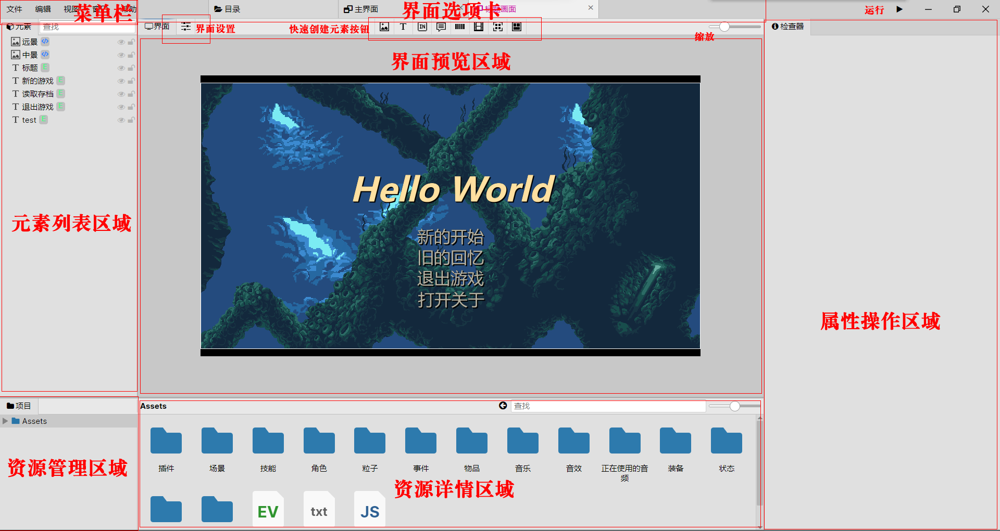

Welcome to YaMi RPG Editor API
This document is provided by xiaoxustudio.
编者：徐然（开始于2023.1.16）
前言
没啥可说的，看得懂就看嘛，反正也没人看
Class Plugin{
onStart(){
console.log("I'm Xuran")
window.alert("I'm Xuran")
}
}
export default Plugin
认识
编辑器的认识

文件的认识（后缀名）
| 后缀名 | 说明 |
|---|---|
| event | 事件文件 |
| actor | 角色文件 |
| scene | 场景文件 |
| annim | 动画文件 |
| item | 物品文件 |
| equip | 装备文件 |
| state | 状态文件 |
| js | 脚本文件 |
脚本文件的认识
actor.js- 角色相关脚本文件.animation.js- 动画相关脚本文件.audio.js- 音频相关脚本文件.camera.js- 摄像机相关脚本文件.codec.js- 编码相关脚本文件.command.js- 指令相关脚本文件.controller.js- 输入控制相关脚本文件.data.js- 游戏数据相关脚本文件.event.js- 事件相关脚本文件.file.js- 文件操作相关脚本文件.filter.js- 渲染相关脚本文件.main.js- 主脚本文件.printer.js- 打印相关脚本文件.scene.js- 场景相关脚本文件.stage.js- 舞台相关脚本文件.time.js- 时间相关脚本文件.ui.js- 界面UI相关脚本文件.util.js- 功能相关脚本文件.variable.js- 变量相关脚本文件.webgl.js- webGL相关脚本文件.